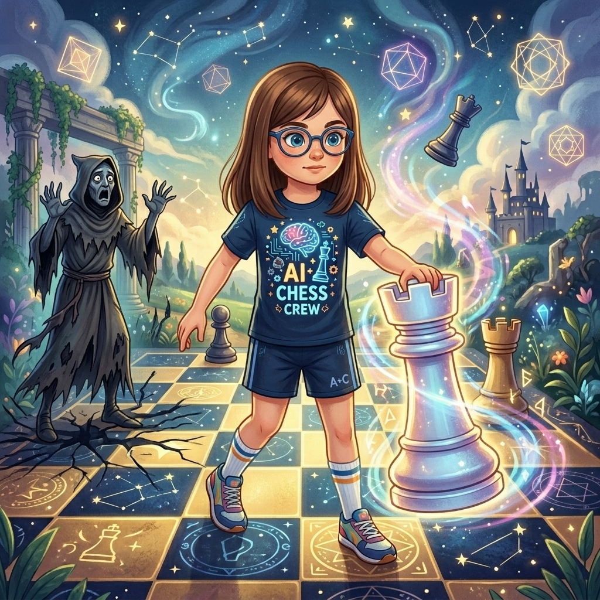
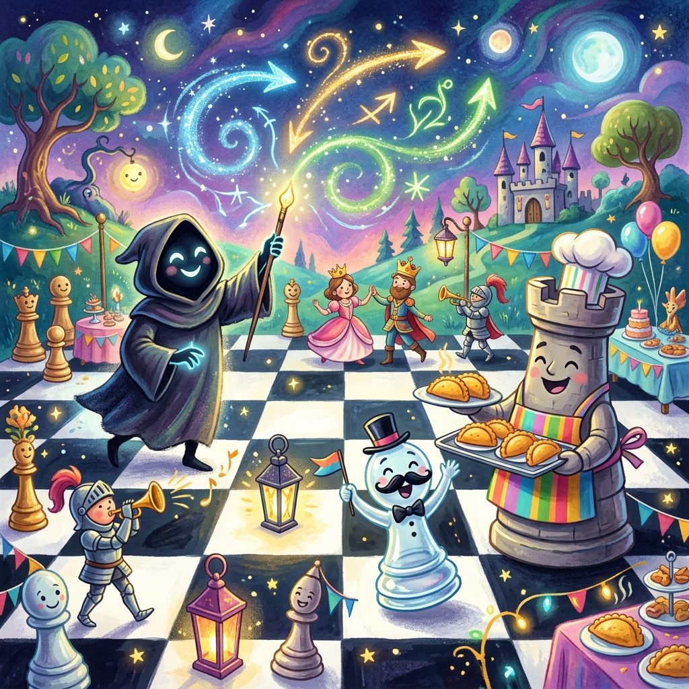

La Clavada del Alfil Exiliado
Donde Martina conoce a un rival digno de su táctica favorita y le demuestra que Morphy ya la hizo mejor en 1858
Si hay algo que Martina ama más que ganar, es ganar con estilo. Y si hay algo que ama más que ganar con estilo, es ganar con una clavada. Una buena clavada —de esas que inmovilizan al caballo enemigo mientras tu alfil lo mira desde la diagonal como un gato mira a un canario— era, para Martina, la jugada más elegante del ajedrez. Más que un sacrificio de dama. Más que un mate en una.
Esa tarde, en el entrenamiento, había ejecutado una clavada tan perfecta que su profe se quedó en silencio quince segundos. Luego dijo: «Martina, eso fue quirúrgico. Polgar estaría orgullosa.» Y Martina sintió que podía volar. O al menos saltar dos casillas y capturar en diagonal.
—Mañana quiero otra clavada —dijo al acostarse—. Más grande. Más cruel. Más bonita.
—Eso no es una oración para dormir —dijo su papá desde la puerta.
—Es una oración para soñar —respondió Martina.
Y se durmió con una sonrisa de alfil satisfecho.

Despertó sintiendo frío. No frío de temperatura —frío de tablero tenso. Estaba de vuelta en el Reino de las Sesenta y Cuatro Casillas. Pero algo había cambiado. El cielo cuadriculado estaba salpicado de piezas inmóviles, como estatuas. Un peón en a3, tieso. Un caballo en c6, congelado a media L. Hasta los peones-rueda del carrito de Torreta estaban quietos, algo que no había ocurrido en siglos (porque incluso siendo ruedas, siempre encontraban algo de qué quejarse).
—Peoncito —llamó Martina.
—Aquí —respondió una voz tensa.
Martina lo encontró en la casilla e4. Estaba paralizado, con un alfil enemigo apuntándolo desde a7. Su bigote falso colgaba de la mejilla, completamente despegado. Pero no podía levantarlo. Peoncito sin poder tocarse el bigote era como un pez sin agua.
—Estoy clavado —dijo Peoncito con una dignidad trágica—. Ese alfil de a7 me mira. Detrás de mí está Torreta en e1. Si me muevo, la torre queda expuesta. Y tú sabes cuánto vale una torre. Cinco puntos. Es como perder veinticinco empanadas.
Martina estudió la posición. La diagonal del alfil partía el tablero como un rayo láser.
—Es una clavada perfecta —dijo, y su voz tenía admiración genuina—. Mira ese ángulo. La profundidad. La precisión. Quien hizo esto...
—¿Podrías no admirarla? —chilló Peoncito—. ¡Soy la víctima!
—Lo siento. Pero mírala. Es hermosa.
Peoncito logró fruncir el espacio donde habría estado su ceja.
Siguiendo la diagonal a7-g1, Martina encontró al responsable.
El Alfil Exiliado estaba en su trono de casillas negras (solo negras; las blancas seguían vetadas). Pero ya no se movía en círculos. Estaba quieto. Concentrado. Su mitra puntiaguda proyectaba flechas de sombra en todas direcciones.
—Veo que dejaste la geometría circular —dijo Martina.
El alfil giró lentamente. Sus ojos de sombra brillaban con una intensidad nueva.
—Descubrí algo mejor —dijo—. La clavada. No es un movimiento: es un arte. Congelas a tu rival. Lo paralizas. Lo obligas a mirar cómo pierdes sin poder hacer nada.
—Lo sé —dijo Martina—. Es mi jugada favorita.
El Alfil Exiliado parpadeó.
—¿Tu... jugada favorita?
—Uso clavadas desde que empecé. Antes de saber enrocar, ya sabía clavar. Mi profe dice que soy «quirúrgica». Judith Polgar, quirúrgica. ¿Entiendes?
El alfil la miró de arriba a abajo. No con desdén. Con curiosidad.
—Nadie en este reino entiende la clavada —dijo—. Los caballos se quejan. Los peones lloran. La Reina Negra estornuda. Pero tú...
—Yo las colecciono —dijo Martina—. Tengo clavadas simples, clavadas dobles, clavadas cruzadas y una clavada que hice el martes que dejó a un alfil llorando en una esquina. Esa es mi favorita.
El Alfil Exiliado se irguió. Su mitra se enderezó. Por primera vez en siglos, algo parecido a una sonrisa cruzó su rostro de sombra.
—Entonces sabrás que he clavado a medio reino. No por maldad. Por demostración. Para que vean lo que una clavada puede hacer.
—Y lo que hiciste con Peoncito y Torreta —dijo Martina—: diagonal a7-e1. Alfil apunta al peón, detrás está la torre. Es clavada de libro. Limpia. Elegante. Te doy un ocho.
—¿Un ocho?
—No es un diez porque Torreta no es la dama. Si fuera la dama, sería perfecta.
—Detrás de Peoncito está la Reina Blanca —dijo el alfil—. Está en e1. La acabo de clavar. Torreta está en e2 ahora. La cambié mientras hablábamos.
—Entonces te doy un nueve y medio. El decimal es por la creatividad.
El Alfil Exiliado soltó algo que podría describirse como una risa. Era más bien un crujido de madera vieja.
—Me caes bien —dijo—. Por eso te propongo un duelo.
—¿Qué tipo de duelo?
—Un duelo de clavadas. Tú y yo. Una partida. Gana quien ejecute la clavada más hermosa, más letal, más artística.
Martina sonrió. No la sonrisa educada de quien acepta un desafío. La sonrisa de quien acaba de recibir el mejor regalo del mundo.
—Me estás haciendo un favor —dijo—. Llevo todo el día esperando clavar algo.
El tablero de duelo apareció entre ellos, más brillante que nunca. Martina llevaba las blancas. El Alfil Exiliado, las negras. Alrededor, las piezas clavadas del reino se descongelaron lentamente para mirar. Hasta el reloj parlante dejó de explicar relatividad (por una vez en su vida) para prestar atención.
—e4 —dijo Martina. Su peón saltó dos casillas, enérgico.
—e5 —respondió el Alfil.
—Cf3 —Martina desarrolló su caballo al centro—. No es una clavada todavía, pero paciencia. Las clavadas se cocinan a fuego lento. Como las empanadas.
—Las empanadas se fríen —corrigió Torreta desde la banda.
—Lo que sea.
El Alfil Exiliado jugó d6. Defensa Philidor. Sólida. Típica de alguien que quiere sobrevivir para clavar después.
Martina jugó d4, abriendo el centro. Y entonces, en la jugada tres, el Alfil Exiliado hizo su primer movimiento de artista.
Ag4.
El alfil negro se plantó en g4 y clavó el caballo blanco de f3. Una diagonal perfecta que atravesaba al caballo y apuntaba a la dama.
—Primera clavada —anunció el Alfil—. Tu caballo no puede moverse. Detrás está tu dama. Si el caballo se aparta...
—Sí, sí, sé cómo funciona una clavada —dijo Martina—. La reconozco porque yo hago la misma. Buena elección.
Pero Martina no se inmutó. No necesitaba mover el caballo. En lugar de eso, jugó dxe5, capturando el centro. El Alfil capturó el caballo: Axf3. La dama blanca recapturó: Dxf3.
—Perdiste tu clavada —dijo Martina—. Y yo tengo la dama activa. ¿Cuántos puntos vale una dama activa?
—Nueve —dijo Peoncito desde la banda—. Como cuarenta y cinco empanadas.
—Eso.
El Alfil Exiliado respondió dxe5, capturando el peón. La posición seguía siendo sólida. Martina jugó Ac4, desarrollando el alfil. El Alfil respondió Cf6, desarrollando su caballo. Martina jugó Db3, apuntando a f7. La dama y el alfil formaban una batería clásica. El Alfil Exiliado respondió De7, protegiendo.
Llegó la jugada nueve. Y Martina supo que era el momento.
Ag5.
Su alfil blanco voló hasta g5 y se plantó allí, mirando fijamente al caballo negro de f6. Detrás del caballo... la dama negra en d8.
El tablero vibró.
El Alfil Exiliado se quedó quieto. Miró la clavada. La estudió. La admiró.
—Es una clavada perfecta —dijo—. Tu alfil inmoviliza mi caballo. Si muevo el caballo, pierdo la dama. Está en la diagonal exacta. Ni un milímetro de error. Es...
—Quirúrgica —dijo Martina—. Como Polgar.
—Iba a decir hermosa. Pero quirúrgica también funciona.
El Alfil Exiliado, conmovido pero no vencido, intentó contraatacar. Jugó b5, atacando el alfil de c4. Martina capturó con el caballo: Cxb5. El Alfil recapturó con cxb5. Martina respondió con jaque: Axb5+.
El Alfil Exiliado bloqueó con Cbd7. Martina enrocó largo: 0-0-0. Su rey encontró seguridad y su torre de d1 apuntó al centro como un cañón.
—Ahora viene lo bueno —dijo Martina—. Porque una clavada sola es bonita. Pero una clavada que lleva al mate... —hizo una pausa dramática—... es poesía.
—Mikhail Tal —dijo el reloj parlante desde su poste— decía que el ajedrez es poesía. Y yo agrego que la poesía es relatividad. Y la relatividad...
—¡Cállate! —dijeron todos al mismo tiempo.
El Alfil Exiliado también enrocó: 0-0-0. Intentaba poner a salvo a su rey. Pero su dama seguía clavada por el alfil de Martina en g5. Seguía sin poder moverse. Seguía siendo una espectadora de lujo de su propia derrota.
Martina inspiró hondo. Este era el momento que siempre soñaba: la combinación que rompe una posición sólida con violencia y belleza.
Rxd7.
—¿Estás... sacrificando la torre? —El Alfil Exiliado no daba crédito.
—No sacrifico —dijo Martina—. Invierto. Y la inversión se llama «tu rey se queda sin defensores».

El Alfil Exiliado no tuvo más remedio que capturar: Rxd7. Martina llevó su otra torre a d1: Td1. La torre blanca apuntaba ahora al rey negro como una lanza. El Alfil movió su dama a e6. Demasiado tarde.
Axd7+. Martina capturó la dama con jaque. El caballo recapturó: Cxd7.
—Y ahora —dijo Martina, disfrutando cada sílaba—, la guinda del pastel.
Db8+.
La dama blanca se arrojó contra el rey. El caballo la capturó: Cxb8.
Td8 mate.
La torre entró en d8. El rey negro en c8. El caballo en b8, taponando la huida. El alfil blanco en b5, quitando la casilla d7. Las negras no podían mover. No había escape. No había defensa.
Jaque mate.
El silencio duró exactamente cuatro segundos. Luego, un crujido.
El Alfil Exiliado estaba... ¿aplaudiendo? Sus manos de sombra chocaban produciendo un sonido como de ramas secas.
—Nunca —dijo—, en cuatrocientos años de exilio, había visto una clavada tan elegante. La de g5 fue perfecta. Pero lo que vino después... Eso ya no fue una clavada. Fue una sinfonía.
—Fue Paul Morphy —dijo Martina—. La jugó en París, en 1858. En medio de una ópera. Con gente cantando —hizo una pausa—. Yo solo la copié. Pero con mi estilo.
El Alfil Exiliado asintió lentamente.
—Creí que era el maestro de la clavada. Pero tú no eres una alumna. Eres... una colega.
—Somos colegas —dijo Martina—. Tú la descubriste por tu cuenta, reinventando la geometría. Yo la aprendí estudiando a los grandes. Las dos formas son válidas.
El Alfil Exiliado chasqueó los dedos (bueno, hizo un ruido de bisagra) y todas las piezas clavadas del reino se descongelaron.
Peoncito fue el primero en recuperarse. Se acomodó el bigote con una ceremonia que duró dos minutos enteros.
—Propongo algo —dijo el alfil—. Un club. El Club de la Clavada. Nos reunimos los jueves. Yo enseño la teoría y tú demuestras la práctica.
—Acepto —dijo Martina—. Pero el uniforme del club es un bigote falso.
—Trato hecho.
Peoncito, desde la banda, alzó su bigote como una bandera.
La fiesta de inauguración del Club de la Clavada se celebró en la diagonal a7-g1, que el Alfil Exiliado había decorado con guirnaldas de escaques. Torreta trajo empanadas de Apertura Italiana (las clásicas, por respeto a la tradición). El Caballo de Ŋ intentó bailar y terminó enredado en su propio salto. El reloj parlante dio un discurso sobre «el tiempo relativo de las clavadas» y nadie le hizo caso, como siempre, pero esta vez con cariño.

Martina y el Alfil Exiliado jugaron tres partidas más. Martina ganó las tres. El alfil no se molestó. «Perder contra ti —dijo— es casi tan educativo como ganar yo solo.»
—¿Casi?
—Casi. El orgullo no se va en un día. Llevo cuatrocientos años construyéndolo.
—Con una clavada lo rompes en dos jugadas.
—No me tientes.
Martina sintió que el tablero se volvía suave. Hora de volver.
—Volveré —dijo—. Los jueves. Al club.
—Te espero —dijo el alfil—. Trae clavadas nuevas.
—Siempre tengo.
Y lo último que vio fue al Alfil Exiliado, ya no en círculos, ya no resentido, dibujando flechas en el aire con su mitra mientras explicaba a tres peones curiosos la diferencia entre una clavada absoluta y una relativa. Peoncito, sentado en primera fila, tomaba apuntes con una pluma sujeta al bigote.
Martina sonrió mientras las casillas se volvían sábanas. Mañana, en el entrenamiento, iba a clavar algo. No sabía qué. Pero iba a ser glorioso.
Fin del tercer cuento.
Continuará…
▶️ Reproduce la partida de Paul Morphy — La Ópera de París (1858)